| 日付 | 2012年5月19日（土） |
|---|---|
| 山域 | 谷川 |
| メンバー | 家族（妻、長女・1歳） |
| 山行形態 | 子連れ日帰り |
| アクセス | 車 |
| ルート (Map) | 平標登山口→平元新道→平標山ノ家→平標山→松手山→平標登山口 |
5月も半ばになり、だいぶ高い山にも行けるようになってきた。
快晴が予想される1日に、平標山に登ってみることにする。
谷川連峰の西端に位置する山で、今シーズン初の高山らしい高山だ。
9:06 平標登山口到着。標高970m。
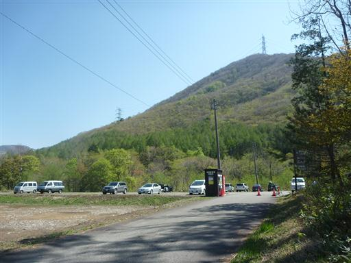
平元新道か松手山コースかどちらを登りに使うか迷ったが、
残雪の量が不明なため、より安全な平元新道コースから登ることにする。
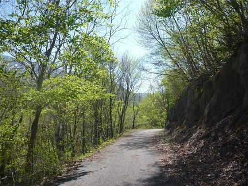
林道と並行して流れる河内沢。水の色が非常に美しい。
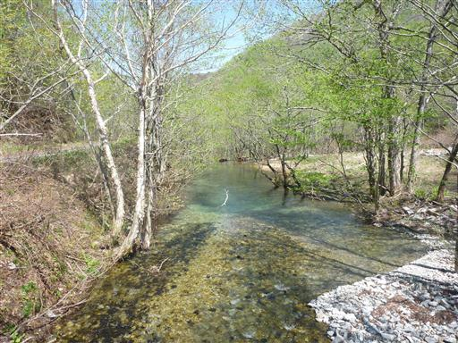
斜面はカラマツの新緑で、こちらも美しい。
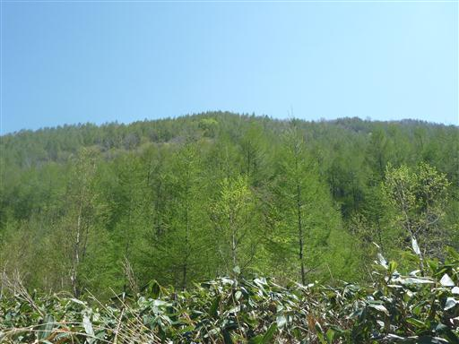
10:06 平標山登山口に到着する。
長い車道歩きだった。
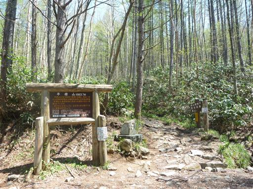
登り始めてすぐ、スキーを担いで登っているグループに出会う。
もう残雪の量は少ないと思うのだが、どこを滑る予定なのだろう？
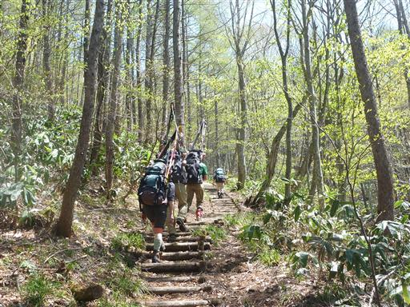
良く整備された木段道を登っていく。
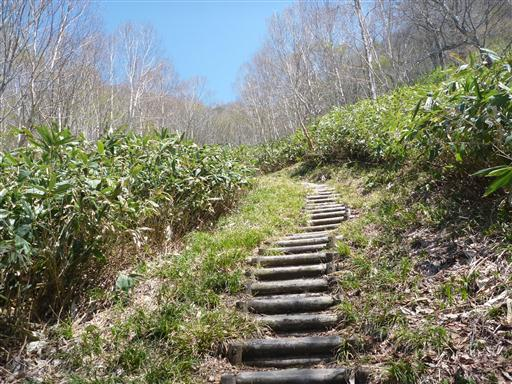
登山道に雪が出てくる。雪はよく締まっている。
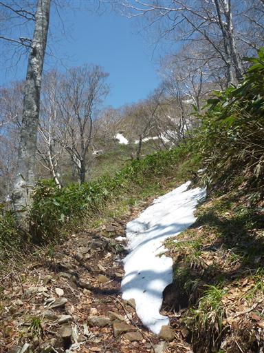
枝に挟まった雪の塊。どんどん解けているので、落ちるのは時間の問題だ。
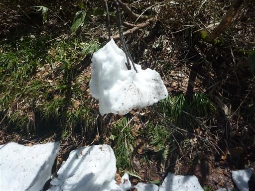
標高が上がりだいぶ展望が良くなってきた。右手に見えるのは苗場山だ。
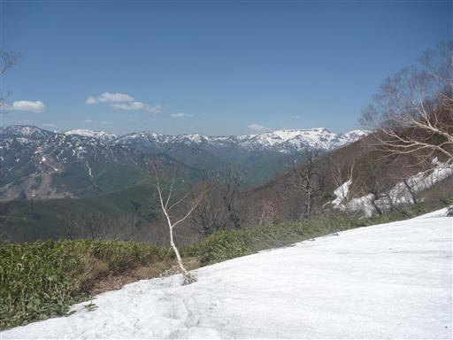
11:03 平標山ノ家に到着する。
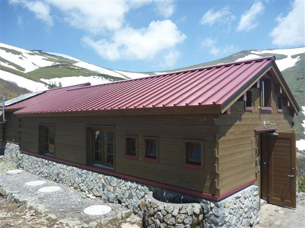
ここで一気に視界が開ける。緑の中の残雪が美しい。

谷川連峰を見渡す。主稜線の山々は仙ノ倉山に隠されてほとんど見えない。
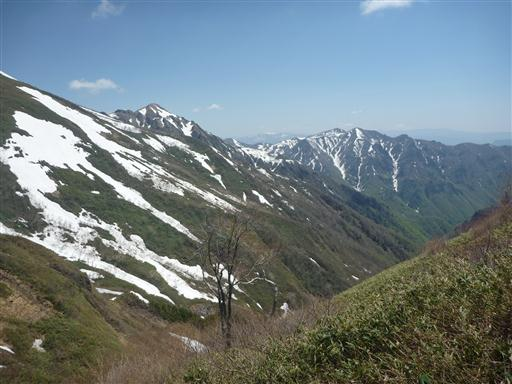
小屋の水場からは常に豊富な水が出続けている。雪解け水のため非常に冷たくておいしい。
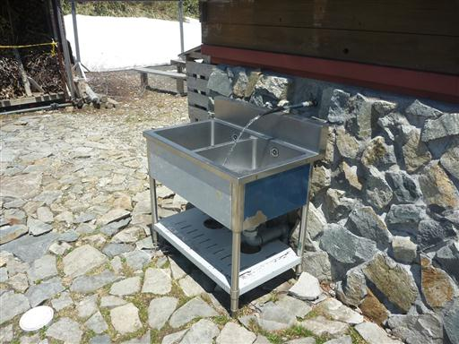
祠にお参りした後、平標山の山頂を目指す。山頂まではまだ1時間近く歩く必要がある。
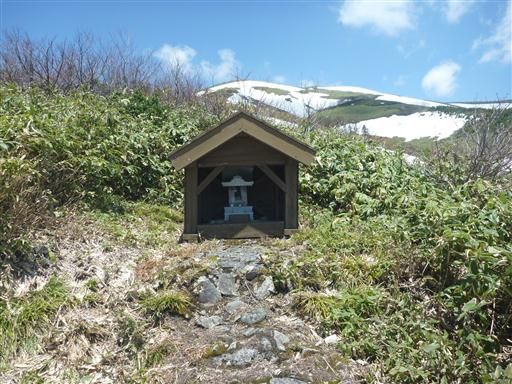
緩やかな広い尾根を登っていく。登山道はよく整備されている。
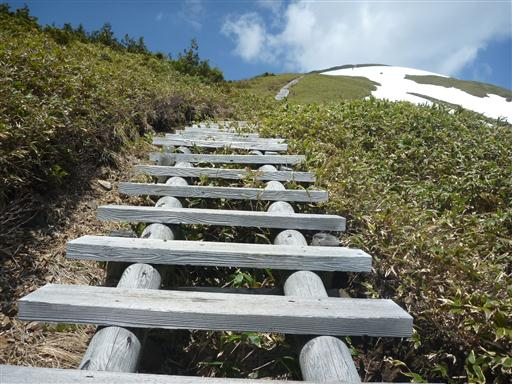
振り返ると大源太山から三国山に続く稜線が見えている。

斜面に残る残雪にはなぜか斜めの筋が入っている。
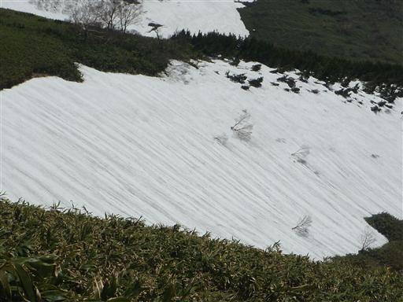
登山道はところどころ残雪に隠される。
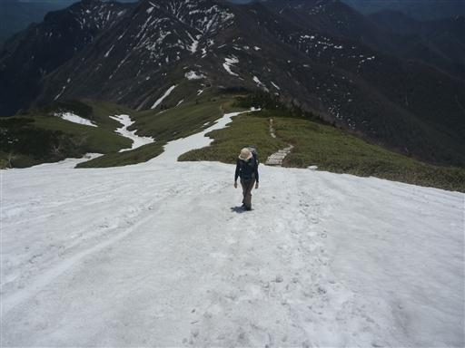
11:56 平標山山頂到着。標高1984m。
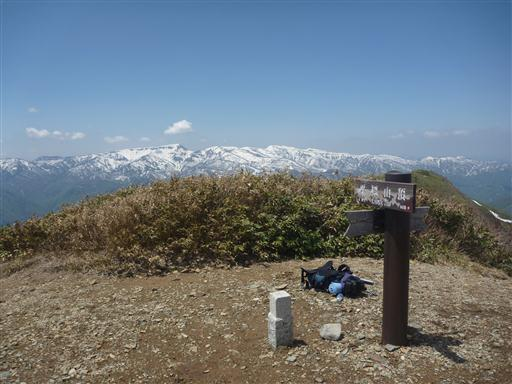
山頂からは360度の大展望が広がる。越後の山々はまだまだ残雪が豊富だ。
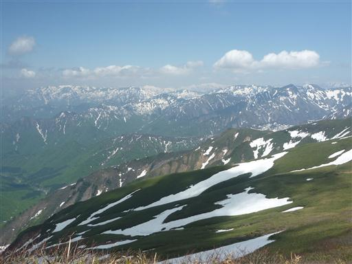
東の方角には谷川連峰の最高峰・仙ノ倉山が大きい。
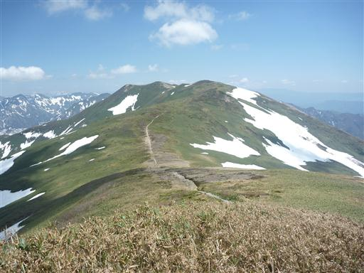
快晴の週末なので、山頂にはそこそこ登山客が来ている。
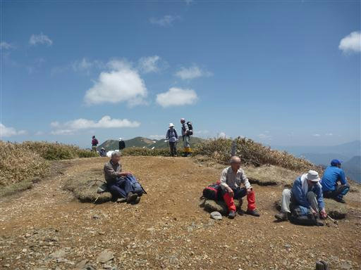
昼食をとったら下山を開始する。下山道は松手山を経由するコースを選ぶ。
しばらくは森林限界を超えた展望の良い登山道が続く。
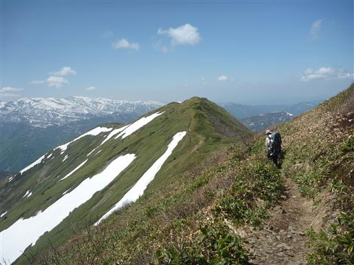
急傾斜の尾根に付けられたジグザグの木段を下っていく。
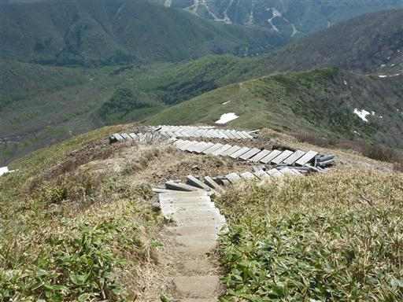
振り返ると平標山はもうかなり高い。
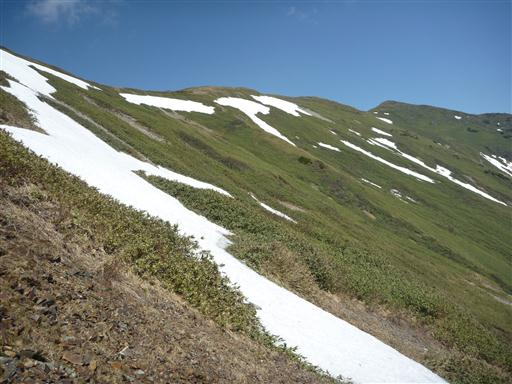
足元にオオバキスミレの花が咲いている。
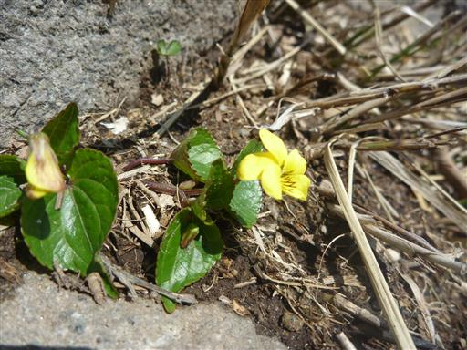
こちらはイワナシ。初めて見る花だ。
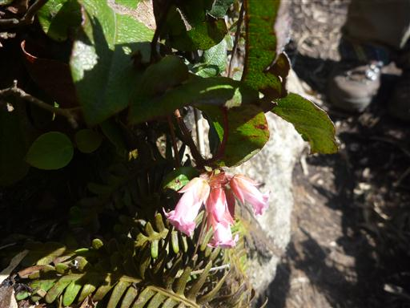
雪が解けたばかりのところは、登山道がぬかるんでいて歩きにくい。
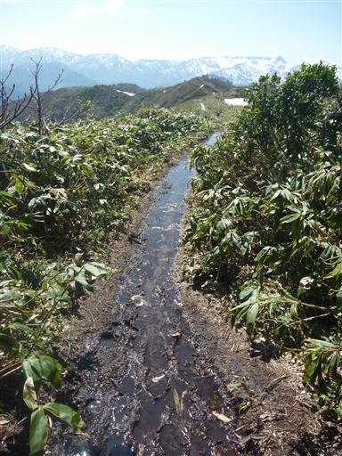
ところどころに残雪が残っている。
登りに使った道より残雪量は少ないが、尾根が細いため少しの残雪でも通過には苦労する。
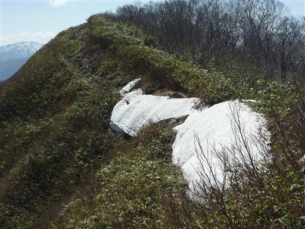
14:01 松手山山頂到着。標高1614m。
尾根上の小ピークだ。

この辺りから樹林帯の中に入り展望はなくなる。
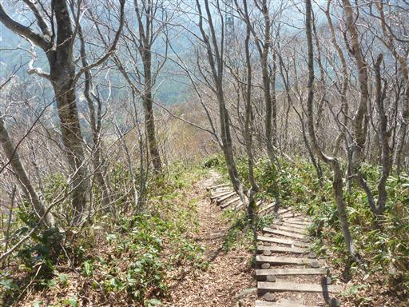
巨大な送電線鉄塔の脇を通る。この界隈は巨大な鉄塔が目立つ。
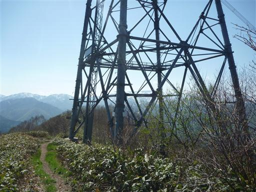
足元に苗場スキー場が見えてきた。冬になると大勢のスキー客でにぎわう一大観光地だ。
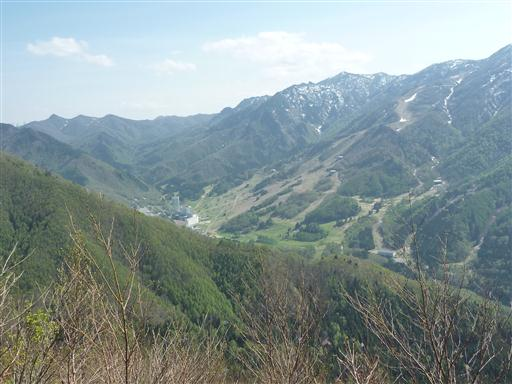
下界が近づくにつれて辺りは新緑に包まれていく。
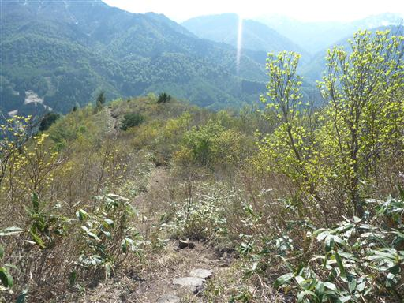
ネコヤナギだろうか？

足元に咲くタチツボスミレ。これまで見たことのないくらい大きな個体だ。
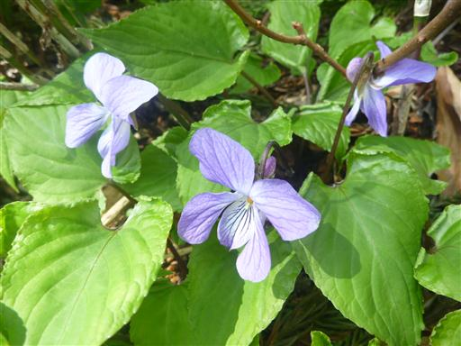
こちらはキクザキイチゲ。美しい花だ。
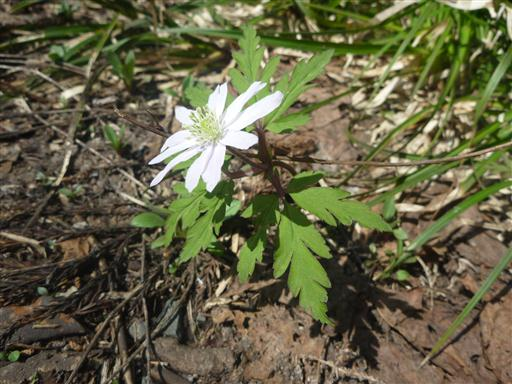
15:05 平標山登山口到着。
駐車場はすぐそこだ。
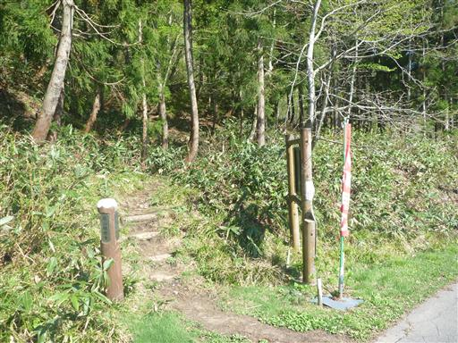
下山時刻が中途半端で、帰りの高速道路が混みそうだったため、
猿ヶ京温泉に寄り道して風呂と食事をとってから帰宅することにする。
家から少々遠いが、手軽に登れて最高の展望を満喫できる山行だった。
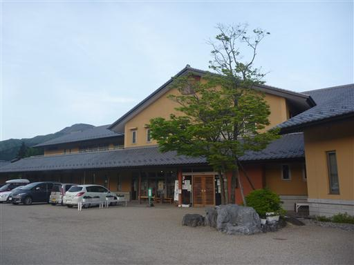